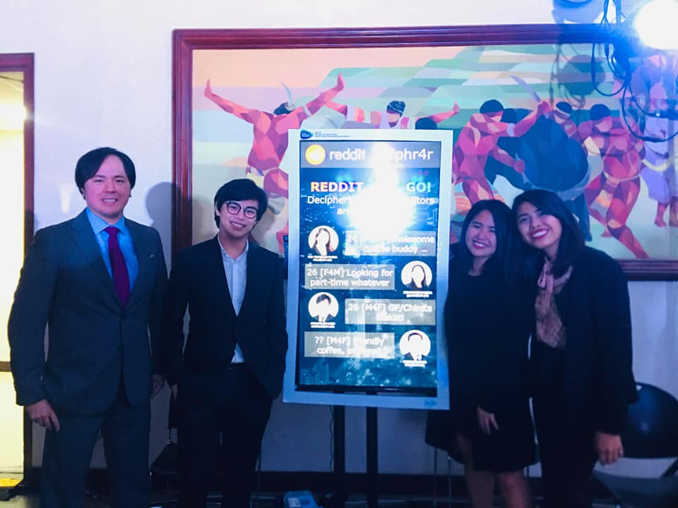
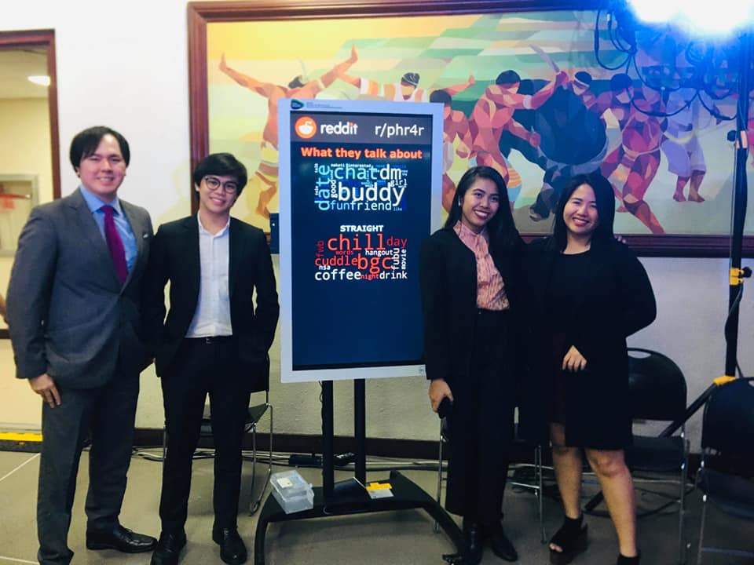

Reddit, Set, Go: Deciphering What Redditors Are Really Looking For
Frequent Itemset Mining (FIM) and Association Rule Mining (ARM) Analysis on Big Data
Executive Summary
Given the privilege of anonymity, Reddit has always been a platform that enabled its users to explicitly post about what they want, with special subreddits being created for several niche topics. Subreddits catering to these are often tagged as r4r or redditor-for-redditor and with that, the aim of this study is to extract all the information on the posts from the Philippine-based subreddit r/phr4r to paint a clearer picture of the dating and hook-up culture in the Philippines. Collection of the data was done through an updated source in Jojie. Frequent Itemset Mining (FIM) and Association Rule Mining (ARM) was employed to extract the most frequently occurring verbs, adjectives, and nouns from individual posts. Data points were identified according to gender, age, and sexual orientation due to the consistent topic name formatting imposed in the subreddit. The demographic information combined with the FIM and ARM output was used for the profiling of different age groups or sexual orientation to create a more granular analysis.
Methodology
The following steps were taken for this study:
-
Data Description and Collection
- Data gathering
- Text data
-
Data Cleaning and Preprocessing
- POS tagging
- N-grams
- Exploratory Data Analysis
- Profiling
-
Data Mining
- Frequent Itemset Mining
- Association Rule Mining
AIM MSDS Big Data and Cloud Computing Project Presentation (December 05, 2019)
 Learning Team 4
(First picture: from left to right) Crisanto E. Chua, Armand Louis A. De Leon, Jeddahlyn V. Gacera, Ria Ysabelle L. Flora